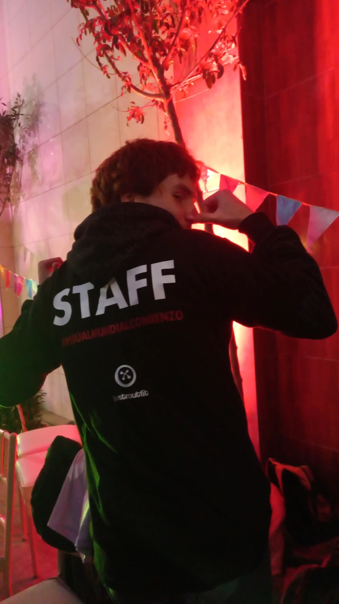

Jose Antonio Benavides
Sobre mi
Hola, soy Jose Antonio Benavides Muñiz, muchos me llaman Joabem, o Jose, soy estudiante de Ciencias de la Computacion el la UTEC (Universidad de Ingeniería y Tecnología)

no encontre otra foto en mi galeria para poner asi que con eso basta, tengo 17 años; me gusta dibujar bailar, jugar videojugos y juegos de mesa, hacer arte en 3d, estudiar programacion, escribir y hacer magia.
tengo un problema y es que no puedo concrentrarme en las cosas que quiero y tiendo a hacer muchas cosas al mismo tiempo u olvidarme de algunas, este trabajo lo estoy haciendo el ultimo dia de entrega porque estuve practicando un poco htlm y se me olvido como hacerlo desde el servidor por lo que no estara bien del todo, pido disculpas al profesor Bellido desde aqui.
Intro a CS